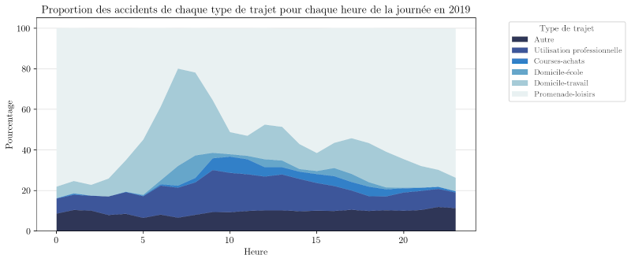
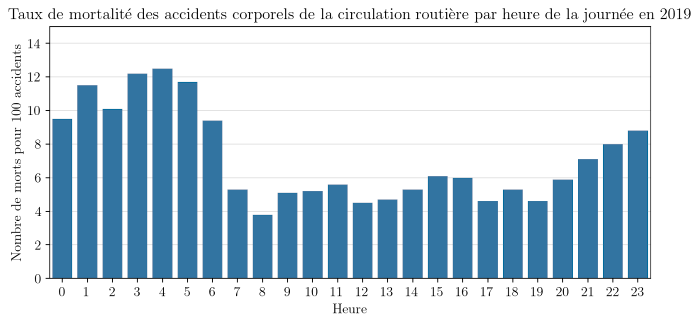

Étude des accidents corporels de la circulation routière entre 2005 et 2021 - Partie 1 : Étude temporelle
Compétences mises en œuvre
- Nettoyage de données
- Manipulation de données
- Jointures de tables
- Visualisation de données
- Tests statistiques
Problématique
Ce projet a été réalisé dans le cadre de ma formation au D.U. Data Analyst à l'université de Cergy. Mon but était de mener une étude temporelle des accidents corporels de la circulation routière et d'analyser l'influence des conditions météorologiques et de limunosité sur la gravité des accidents. Cette partie présente l'étude temporelle.
Le jeu de données est fourni par l' Observatoire National Interministériel de la Sécurité Routière (ONISR) sur le site https://www.data.gouv.fr/. Il contient les informations sur les accidents corporels de la circulation routière, c'est à dire sur les accidents ayant causé au moins un blessé (par commodité, on utilisera simplement le terme « accidents » dans la suite). Il est constitué de quatre fichiers csv par année :
- le fichier caracteristiques contient les données des caractéristiques de l'accident (date, heure, conditions météo,...)
- le fichier lieux contient les données sur le type de route, l'état de la surface (normale, mouillée,...),...
- le fichier vehicules contient les informations sur les véhicules impliqués dans l'accident
- le fichier usagers contient les informations sur les personnes impliquées dans l'accident
L'ensemble du projet est codé en python et contient trois notebooks accessible sur mon compte github
Concaténation, nettoyage et chargement des données
La première opération a été de concaténer les données de chaque année pour obtenir un jeu correspondant à l'ensemble de la période 2005-2021. A l'issue de cette étape, j'ai obtenu quatre fichiers (caracteristiques, usagers, lieux et vehicules). Je ne présenterai pas ici les étapes de ce travail. Pour plus de détails, se référer au notebook.
La deuxième étape a été de nettoyer les données des quatre fichiers. Un gros travail de vérification et de recodage des données a été nécessaire. Pour plus de détails, se référer au notebook.
L'ensemble de l'étude dont les résultats sont présentés ci-dessous est disponible dans ce troisième notebook. Le code étant long, je ne présenterai ici que les résultats obtenus.
Évolution du nombre d'accidents, de morts et de blessés hospitalisés
Quantification et représentation de cette évolution
Sur l'ensemble des 17 années, on dénombre 1 121 571 accidents soit une moyenne de 65 975 accidents par an. Mais comment a évolué le nombre d'accidents au cours de la période 2005-2021 ?
On constate une baisse du nombre d'accidents entre 2005 et 2013. Le nombre d'accidents est passé 87 000 à un peu plus de 58 000 sur cette période. Depuis, on observe une stabilisation entre 55 000 et 60 000 accidents. La chute brutale observée en 2020 (47 744 accidents seulement) est bien-sûr due aux confinements déclenchés suite à l'épidémie de Covid-19.
Qu'en est-il du nombre de morts ?
Le nombre de morts a suivi à peu près la même évolution que le nombre d'accidents. Il est passé de 5 500 en 2005 à 3 400 en 2013. Depuis, il est relativement stable. Là-aussi, on remarque un nombre très inférieur en 2020 avec seulement 2780 morts.
Regardons maintenant le nombre de blessés hospitalisés.
L'évolution est la même que précédemment jusqu'en 2017. Mais on constate une forte baisse à partir de 2018. Il faut être prudent dans l'interprétation de ce constat. En effet, l'ONISR précise que le processus de recensement des blessés a changé en 2018 et qu'il n'est pas possible de comparer le nombre de blessés avant et après 2018.
Corrélation entre le nombre annuel d'accidents et de morts

Le diagramme présentant ci-dessus le nombre annuel de morts en fonction du nombre annuel d'accidents suggère une très forte corrélation entre les deux. Le test de corrélation de Spearman confirme une corrélation très significative au risque de 5 % (p < 0.0001***) et très forte (r = 0.97).
Corrélation entre le nombre annuel d'accidents et de blessés hospitalisés
De la même manière, le graphique présentant le nombre de bléssés hospitalisés en fonction du nombre d'accidents suggère une corrélation positive entre les deux variables. Le test de corrélation de Spearman confirme cette hypothèse au risque de 5 % : la corrélation est très significative (p < 0.0001***) et très forte (r = 0.95).
Les mois les plus accidentogènes
Dans cette partie, l'année 2020 est exclue. En effet, les confinements du printemps et de la fin de l'année ont eu un effet qui fausserait les chiffres et leur interprétation.
Sur l'ensemble des autres années, on observe un nombre mensuel moyen d'accidents de 5 593. Mais cette moyenne cache des disparités. En effet, le nombre mensuel d'accidents a varié entre 3 350 et 8 469 et on observe un écart-type égal à 1053.
On peut se demander s'il existe des mois plus accidentogènes que d'autres. Le diagramme ci-dessous montre que le nombre mensuel moyen d'accidents est plus élevé en octobre, juin et septembre avec respectivement 6 374, 6 325 et 6 173 accidents en moyenne. Les diagrammes en boîtes montrent également que les médianes de ces trois mois sont plus élevées que les autres (médianes respectives de 5 940, 5 870 et 5 778). A l'opposé, le mois de février ne compte qu'une moyenne de 4 485 accidents et une médiane de 4 255.
Le test de Kruskal-Wallis permet d'affirmer que la diff√©rence des m√©dianes est significative (ùúí¬≤(11) = 56.59, ùëù < 0.001***).
Taux de mortalité par mois de l'année
Dans cette partie, nous utiliserons le taux de mortalité défini comme étant le nombre de morts pour 100 accidents. On peut remarquer que les mois de juillet, août et décembre sont ceux qui ont les taux de mortalité moyens les plus importants. Les autres mois ont des taux de mortalité moyens plus proches les uns des autres.
Une ANOVA permet de conclure à une différence très significative des taux de mortalité (F(11, 180)=23.18, p<0.000***). Le test de comparaisons multiples de Tuckey révèle une différence significative du taux de mortalité moyen du mois d'août avec tous les autres mois (à l'exception de juillet). Quand à celui du mois de juillet, il est significativement différent de celui des autres mois à l'exception des mois de décembre et août. Enfin, si on excepte les mois de juillet et août, le taux de mortalité moyen du mois de décembre est significativement différent de celui des autres mois mise à part février.
Taux de mortalité par jour de la semaine
Quel que soit le mois de l'année, le taux de mortalité est plus important le week-end qu'en semaine.
Si on calcule la différence entre le taux de mortalité le week-end et la semaine, on remarque que les mois de juillet et août ont une des différences les plus faibles. Le grand taux de mortalité de ces deux mois ne s'explique donc pas par les accidents causés lors des week-ends de grands départs en vacances. Leur taux de mortalité reste plus élevé que celui des autres mois quel que soit le jour de la semaine.
Nombre moyen d'accidents par heure de la journée
L'étude du nombre d'accidents par heure de la journée a été effectuée uniquement sur l'année 2019. En effet, dans le jeu de données le codage des heures lors des années précédentes est ambigü. Pour ne pas risquer de mauvaise interprétation, ces années n'ont pas été prises en compte. De plus, les confinements et couvre-feux des années 2020 et 2021 faussent les données.
Sur le graphique ci-dessus, on remarque deux pics : un pic le matin principalement entre 8h et 9h, et un pic en fin d'après-midi entre 17h et 19h. On peut penser aux horaires de trajets domicile-travail, ce qui se confirme pour le pic du matin si on regarde la proportion d'accidents par type de trajet (voir ci-dessous). Cependant, le soir ce sont les trajets pour loisir qui prédominent. Il faut toutefois prendre cette information avec précaution : un certain nombre de personnes peuvent aller faire du sport ou retrouver des amis directement après avoir quitté le travail, sans repasser par chez eux. Ce type de trajets est peut-être classé dans les trajets loisirs.

Taux de mortalité par heure de la journée
Si le nombre d'accidents est plus important en journée, le taux de mortalité des accidents est plus important la nuit. C'est en effet entre minuit et 7h qu'il est le plus haut avec un pic à 12,5 morts pour cent accidents corporels entre 4h et 5h.

Carte interactive des accidents dans les Côtes d'Armor
La carte ci-dessous présente les accidents dans les Côtes d'Armor sur la période 2019-2021. Ce sont les seules années pour lesquelles le jeu de données donne la latitude et la longitude de chaque accident.